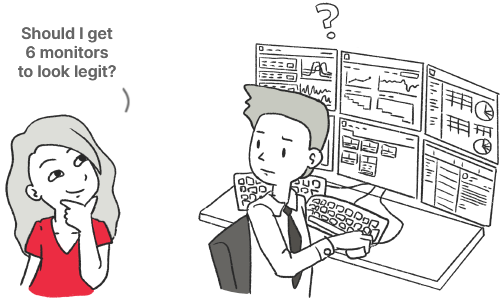
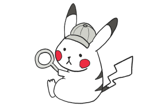
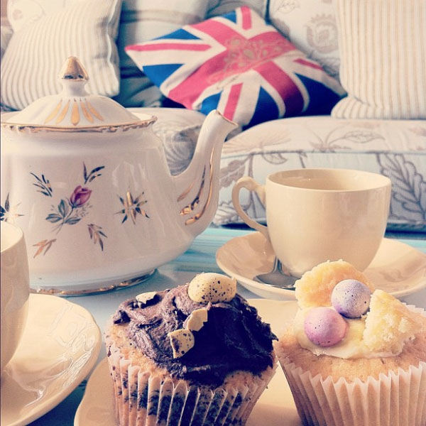
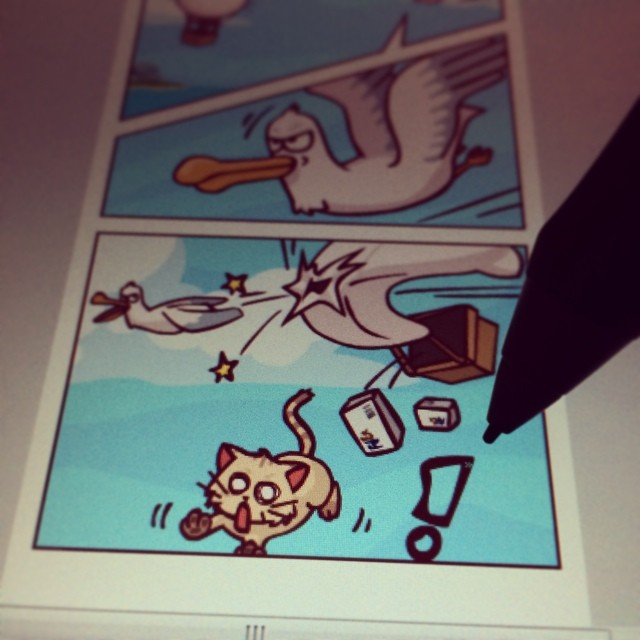
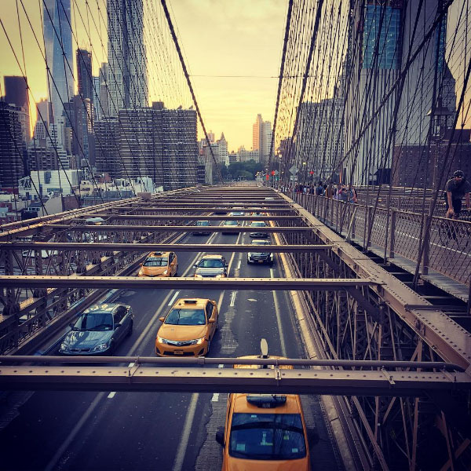

From Business to Design & AI
Today, I'm a design exec blending user experience and AI with business strategy in the financial space... 🐣 and I wasn’t born a UX designer, nor AI enthusiast.
I started my career in consulting and finance, explaining structured investment solutions to diverse clients ranging from French agricultural cooperatives (in Paris) to regional banks in Asia (in Hong Kong).
Back then, I was a victim of disjointed interfaces.
It almost seemed to be a point of pride on the trading floor! The more complicated your screen looked, the cooler you were.

But I had a secret: I was an undercover designer.
Day job aside, I was a freelance artist and indie game developer (still doing it today!), and I rebelled against my badly designed tools to change them.

Fast forward to today, I am now the Managing Director of Design at Societe Generale CIB, responsible for its design vision and strategy. I lead an international and multidisciplinary team of design experts from London, in service of our mission to empower people to take control over sophisticated products and financial systems.
New side quest unlocked: I picked up more recently a second hat as the bank's UK AI Officer to look at AI adoption and how our AI strategy lands in the UK, from regulatory requirements to actual deliveries.
As part of the UK Executive Committee of our Global Banking Technology & Operations department, I'm also a culture change advocate for highly collaborative organisations 🚀.
Life snippets



Biographies
Bio in English
Morgane is a Managing Director with 15+ years of experience leading design, product, and transformation programmes in complex financial environments. Currently Head of Product Design and UK AI Officer at Societe Generale CIB, she helps deliver and shape digital products for start-ups, corporates, and financial institutions across cross-functional teams and countries. Morgane brings a design mindset to complex challenges, blending user insights with technical feasibility to maximise business impact.
Outside of work, she mentors, speaks at international conferences, and tinkers with emerging trends through side projects, such as running a solopreneur crochet business and contributing to a crowdfunded indie video game.
Bio in French
Morgane Peng est Managing Director à la Société Générale CIB, où elle est responsable monde du design produit et AI Officer pour le Royaume-Uni. Avec un parcours entrepreneurial dans les industries numériques, culturelles et créatives, elle s’est aventurée dans divers domaines du conseil en entreprise, de la finance de marché, du design et de la tech.
Parallèlement à sa carrière, Morgane intervient dans des conférences internationales, s'investit dans le mentorat, et explore les nouvelles tendances via ses projets personnels, notamment son activité de solopreneur crochet et sa participation à un jeu vidéo indépendant financé sur Kickstarter.
Headshot
If you're a conference and you need a headshot, I recommend this 1:1 headshot or this 2:3 portrait.
If you need any other format, please get in touch.